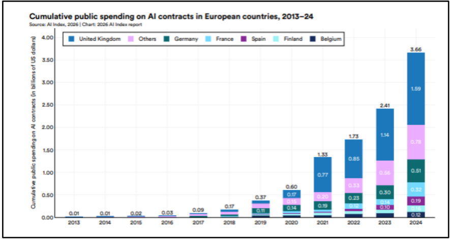
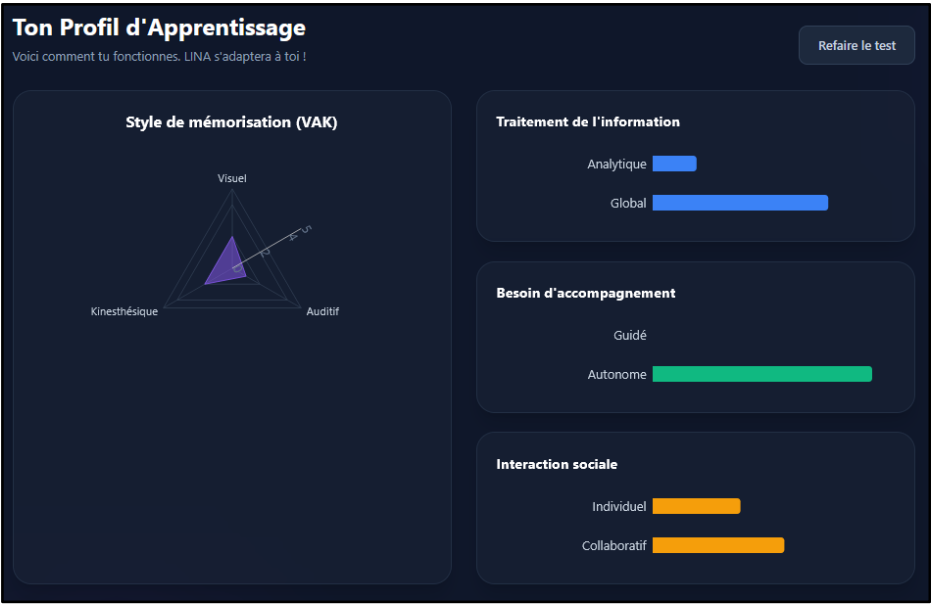

Toute la Partie III repose sur une seule bascule, déjà posée en Partie II : l'IA augmente quand un socle de compétence existe et reste sollicité ; elle substitue quand ce socle manque, s'érode, ou n'a plus l'occasion de se construire. Les trois sous-parties suivent une progression logique : le risque individuel (3.1), son prolongement au niveau collectif et organisationnel (3.2), puis les réponses concrètes, principes et projet personnel, pour rester du bon côté de la bascule (3.3).
3.1 Risques pour les compétences humaines
L’intelligence artificielle ne supprime pas nécessairement l’effort : elle en déplace le point d’application. En prenant en charge la recherche d’informations, la reformulation ou la production d’une première version, elle permet théoriquement à l’utilisateur de consacrer davantage de temps à la compréhension, à la vérification et à la prise de décision. Cependant, lorsque les opérations déléguées ne sont plus exercées et que le temps économisé n’est pas réinvesti dans des activités exigeantes, ce déplacement peut se transformer en suppression de l’effort.
Cette évolution constitue l’antithèse des bénéfices précédemment observés dans les dynamiques d’apprentissage. L’assistance permanente peut entraîner un désengagement cognitif, une érosion progressive du socle de compétences et un appauvrissement des interactions humaines. Ces risques sont également inégalement répartis : un expert dispose généralement des connaissances nécessaires pour contrôler l’outil, tandis qu’un novice peut déléguer précisément les opérations qu’il doit encore apprendre à maîtriser.
a) Quand le déplacement de l’effort devient suppression de l’effort
La délégation cognitive désigne l’externalisation d’une opération mentale vers un support ou un outil. Elle concerne, par exemple, la mémorisation d’une information, la recherche documentaire, la rédaction ou la résolution d’un problème. Ce mécanisme n’est pas nouveau : l’écriture, la calculatrice ou les moteurs de recherche permettent déjà de diminuer la charge associée à certaines opérations. L’IA générative étend néanmoins cette délégation à des activités plus complexes, puisqu’elle peut rechercher et synthétiser des informations, organiser une argumentation ou produire directement un contenu finalisé.
Deux formes de délégation doivent alors être distinguées. Dans une logique de délégation augmentée, l’utilisateur conserve la conduite du raisonnement. Il définit le problème, apporte les informations nécessaires, analyse la réponse et corrige les éventuelles erreurs. L’outil accélère une opération, mais ne dispense pas l’utilisateur de la comprendre. Dans une logique de délégation substitutive, l’IA accomplit l’opération cognitive à sa place. L’utilisateur peut alors obtenir un résultat convaincant sans avoir véritablement recherché, raisonné ou rédigé.
L’étude Your Brain on ChatGPT¹, publiée sous forme de prépublication par des chercheurs du MIT Media Lab en 2025, illustre cette distinction. Les chercheurs ont comparé des participants chargés de rédiger des textes dans trois conditions : avec un modèle de langage, avec un moteur de recherche ou sans outil numérique. Ils ont notamment étudié leur engagement cognitif, leur capacité à se souvenir du contenu produit et leur sentiment d’appropriation du texte. Les résultats présentés indiquent un engagement cognitif plus faible chez les participants assistés par un modèle de langage, ainsi qu’une mémorisation et une appropriation moins importantes de leur production.
Les chercheurs introduisent à ce sujet la notion de « dette cognitive ». L’assistance peut produire un bénéfice immédiat en réduisant l’effort nécessaire à l’accomplissement d’une tâche, mais elle peut également reporter un coût sur les apprentissages ultérieurs. En obtenant rapidement un résultat, l’utilisateur évite certaines opérations indispensables à la construction de la compétence : rechercher une idée, organiser un raisonnement, sélectionner une formulation ou corriger une première version.
Ces résultats doivent toutefois être interprétés avec prudence. L’étude repose sur un échantillon limité et porte sur une tâche particulière de rédaction. Elle ne permet donc pas de conclure que l’utilisation de l’IA provoquerait une baisse générale de l’intelligence ou une régression intellectuelle systématique. Elle met plutôt en évidence un risque de moindre mobilisation cognitive lorsque l’outil prend directement en charge une partie importante du travail¹.
L’IA ne détruit donc pas directement une capacité. Elle peut cependant diminuer les occasions de l’exercer. Une délégation ponctuelle n’entraîne pas nécessairement une perte de compétence, mais la répétition du contournement peut modifier durablement la manière dont l’utilisateur apprend et résout les problèmes. Lorsque l’effort économisé n’est pas réinvesti dans la compréhension, la vérification ou la prise de décision, le déplacement de l’effort devient progressivement une suppression de l’effort.
b) De l’assistance à l’érosion du socle : illusion de compétence et dépendance cognitive
La répétition de la délégation peut conduire l’utilisateur à confondre la qualité du résultat obtenu avec sa propre maîtrise. Une réponse claire, structurée et convaincante produit facilement une impression de compréhension. Pourtant, reconnaître une explication lorsqu’elle est présentée ne signifie pas être capable de la reconstruire, de l’appliquer à une situation nouvelle, d’en détecter les erreurs ou d’agir sans assistance.
La performance visible devient alors celle du système formé par l’humain et l’IA, alors qu’elle peut être attribuée à tort à l’utilisateur seul. Celui-ci dispose d’un résultat de qualité, mais ne maîtrise pas nécessairement les opérations qui ont permis de le produire. Cette confusion alimente une illusion de compétence : la fluidité de l’utilisation de l’outil est interprétée comme la preuve d’une maîtrise personnelle.
Ce phénomène concerne directement la métacognition, c’est-à-dire la capacité d’un individu à évaluer ses propres connaissances et ses processus d’apprentissage. Elle permet notamment d’identifier ce que l’on sait réellement, de reconnaître ce que l’on ne comprend pas, d’évaluer la fiabilité d’une réponse et de déterminer si une aide extérieure est nécessaire. Or, l’accès immédiat à une réponse peut empêcher l’utilisateur de mesurer l’écart entre ce qu’il sait produire seul et ce qu’il obtient avec l’outil.
La neuropsychologue Sylvie Chokron, directrice de recherche au CNRS, attire notamment l’attention sur les conséquences possibles d’une sollicitation moins fréquente de certaines capacités intellectuelles lorsque les outils numériques accomplissent les opérations à la place de l’utilisateur². Selon elle, certaines capacités moins sollicitées pourraient être remobilisées lorsque les habitudes numériques sont interrompues². Cette perspective invite à distinguer une disparition de la compétence d’un affaiblissement lié à son manque d’exercice, sans permettre pour autant de conclure à une réversibilité systématique. Le risque principal reste donc moins la destruction immédiate d’une capacité que son entretien insuffisant.
La personnalisation des apprentissages peut renforcer ce phénomène. Comme cela a été montré dans la première partie, l’IA peut adapter le rythme, la difficulté et les explications au niveau de chaque élève. Elle peut reformuler une consigne, proposer un exemple supplémentaire, fournir un indice ou corriger immédiatement une erreur. Cette adaptation favorise la réussite à court terme, mais celle-ci ne garantit pas nécessairement un apprentissage durable.
Certaines difficultés jouent en effet un rôle dans la construction de la compétence. Elles obligent l’apprenant à chercher, essayer, se tromper, récupérer une connaissance en mémoire, corriger son raisonnement et persévérer malgré l’incertitude. Si l’IA reformule systématiquement chaque consigne, donne immédiatement un indice et corrige chaque erreur, elle risque de créer un environnement excessivement protecteur. L’élève peut alors progresser dans le dispositif sans apprendre à affronter seul une situation difficile.
Or, la vie scolaire et professionnelle n’est pas entièrement personnalisée. Une adaptation permanente de l’environnement peut donc améliorer la performance dans le dispositif tout en préparant insuffisamment l’apprenant aux situations extérieures.
L’objectif de la personnalisation ne doit pas être de construire un environnement qui s’adapte indéfiniment à l’élève, mais de rendre progressivement l’élève capable de s’adapter à un environnement qui ne le sera pas toujours. Il ne s’agit donc pas de supprimer la personnalisation, mais d’organiser un retrait progressif de l’assistance. L’IA doit calibrer la difficulté, non l’abolir.
c) Le risque de la boucle solitaire
L’IA présente un avantage important pour l’apprentissage : elle constitue un interlocuteur disponible en permanence. Elle répond immédiatement, ne porte pas de jugement et accepte de répéter ou de reformuler une explication autant de fois que nécessaire. Cette disponibilité permet notamment de poser des questions élémentaires que l’apprenant n’oserait pas toujours adresser à un professeur ou à un collègue.
Ce bénéfice peut toutefois se retourner. Ne plus devoir déranger un professeur ou un collègue facilite le travail ; ne plus jamais les solliciter peut appauvrir l’apprentissage. Les interactions humaines ne servent pas uniquement à obtenir une information. Elles permettent également de confronter des interprétations, de défendre un point de vue, de coopérer, de négocier le sens d’une consigne et d’apprendre les codes sociaux ou professionnels.
Cette distinction apparaît notamment dans l’expérience menée au Crédit Agricole Sud Méditerranée. L’échange avec un collègue reste nécessaire pour comprendre le contexte, les pratiques implicites et les conséquences organisationnelles d’une décision. Une réponse techniquement correcte ne suffit pas toujours à saisir les contraintes du terrain.
d) Une vulnérabilité inégale entre experts et novices
Comme établi en Partie I, l’IA ne supprime pas l’attente de performance humaine : elle la déplace. L’utilisateur est moins attendu sur l’exécution et davantage sur la formulation du problème, l’évaluation de la qualité, la détection des erreurs, la responsabilité et la relation. Toutefois, ces nouvelles dimensions ne sont pas également maîtrisées par tous. L’expert dispose de connaissances métier, de références et d’une expérience lui permettant d’apprécier la pertinence d’une réponse. Le novice, en revanche, ne possède pas encore pleinement les critères nécessaires pour exercer ce contrôle. Le déplacement de l’attente peut donc avantager celui qui maîtrise déjà le domaine, tout en fragilisant celui qui devait précisément construire cette maîtrise.
Un paradoxe apparaît alors : le novice est celui qui a le plus besoin d’aide, mais aussi celui qui possède le moins de connaissances pour contrôler cette aide. À l’inverse, l’expert a parfois moins besoin de l’outil, mais il est mieux armé pour l’utiliser comme un véritable levier d’augmentation.
Il devient donc nécessaire de préserver des temps de travail sans assistance, particulièrement pendant les phases d’acquisition.
L’IA augmente plus sûrement celui qui possède déjà le socle nécessaire pour la contrôler ; elle risque davantage de fragiliser celui qui devait encore construire ce socle. Les risques présentés ne conduisent donc pas à rejeter l’outil, mais à distinguer l’assistance qui développe l’autonomie de celle qui installe une dépendance.
¹ Kosmyna, N. et al., Your Brain on ChatGPT: Accumulation of Cognitive Debt when Using an AI Assistant for Essay Writing Task, MIT Media Lab, 2025. https://www.media.mit.edu/projects/your-brain-on-chatgpt/overview/
² Le Quotidien, “La neuropsychologue Sylvie Chokron, directrice de recherche au CNRS, nous parle de l'effet de l'IA sur nos capacités intellectuelles.”. https://www.instagram.com/p/DYQICwWgnEh/
3.2 Coûts de transition et impacts organisationnels
Les gains associés à l’intelligence artificielle ne peuvent être évalués indépendamment des coûts nécessaires à leur réalisation. Derrière l’utilisation des outils se trouvent des investissements financiers, une montée en compétence parfois insuffisante, une réorganisation du travail et de nouvelles responsabilités.
a) Le coût réel de l’IA : investissement, ROI et incertitude économique
Le coût d’adoption de l’IA ne se limite pas à l’acquisition de licences. Il comprend d’abord des dépenses directes : abonnements, recours aux API, infrastructures cloud, sécurisation des accès ou intégration aux systèmes d’information. À celles-ci s’ajoutent des coûts indirects, parfois moins visibles, liés à la formation, à l’expérimentation et à la conduite du changement.
L’entretien réalisé auprès de la section jeune de l’USAP confirme ce constat : la mise en place d’outils d’IA est freinée non seulement par l’investissement financier nécessaire, mais également par les compétences humaines qu’elle exige. La technologie ne produit donc pas mécaniquement de la valeur. Son efficacité dépend de la capacité de l’organisation à l’adapter à ses processus et à accompagner ses utilisateurs.
Dans ces conditions, le retour sur investissement demeure difficile à chiffrer. Certains bénéfices sont quantifiables, comme le temps économisé, tandis que d’autres sont qualitatifs ou différés : amélioration de la qualité, accélération de l’apprentissage ou recentrage sur des missions à plus forte valeur ajoutée. Une adoption précipitée peut ainsi conduire à investir avant d’avoir identifié les usages réellement pertinents.
Le calcul doit enfin intégrer une dimension stratégique : la dépendance à des fournisseurs étrangers. Comme le souligne Jean-Baptiste MERIEM, le développement d’une IA nationale ou souveraine pourrait devenir un enjeu croissant. Le choix d’un fournisseur expose en effet l’organisation à des variations tarifaires, à des restrictions d’accès et à des risques géopolitiques ou réglementaires. Les initiatives européennes, notamment autour de Mistral AI, de l’AI Act et du cloud de confiance, témoignent de cette préoccupation. La souveraineté représente donc un coût supplémentaire, mais aussi une condition possible de maîtrise à long terme.
L’augmentation des investissements consacrés à l’intelligence artificielle témoigne de son caractère désormais stratégique. D’après le graphique Cumulative Public Spending on AI Contracts in European Countries, 2013–24, publié dans le AI Index Report 2026³ de l’Université Stanford, les dépenses publiques cumulées consacrées aux contrats d’IA dans les pays européens sont passées de 0,17 milliard en 2018 à 3,66 milliards en 2024, soit une multiplication par plus de vingt en six ans (Stanford Institute for Human-Centered Artificial Intelligence, 2026). Cette progression révèle l’ampleur des moyens engagés et peut contribuer à renforcer une dynamique d’adoption chez les acteurs privés.

b) La dette de compétence : déployer plus vite que former
Un second coût apparaît lorsque les outils sont déployés plus rapidement que les compétences nécessaires à leur utilisation. Cet écart peut être qualifié de dette de compétence : l’organisation bénéficie immédiatement d’un outil, mais reporte l’investissement indispensable à sa maîtrise.
Le chiffre présenté en 1.2 a.2 illustre cette situation : 73 % des utilisateurs n’utilisent jamais ou rarement la bibliothèque de prompts mise à leur disposition sur FELIX. L’outil est donc accessible, mais une fonctionnalité destinée à améliorer son usage reste largement inexploitée. La mise à disposition technique ne garantit ni l’appropriation ni la progression des pratiques.
Cette dette réduit progressivement les gains de performance. Les utilisateurs peuvent se limiter à des opérations simples, résumer, reformuler ou produire une première version, sans développer les capacités de formulation, de contrôle et d’analyse permettant des usages plus avancés. L’organisation risque alors de confondre adoption et maîtrise.
À terme, cette situation crée également une dépendance. Si les équipes utilisent régulièrement des productions qu’elles ne savent pas suffisamment évaluer, le gain immédiat masque une fragilisation des compétences internes. La formation ne constitue donc pas seulement une dépense d’accompagnement : elle représente un investissement nécessaire à la pérennité de la performance.
c) Le coût humain et organisationnel de la transition
L’intégration de l’IA suscite également des résistances liées au sentiment d’obsolescence, à la transformation des fonctions et à la nécessité d’un repositionnement professionnel. Ces réactions ne doivent pas être réduites à un refus du changement : elles peuvent révéler un décalage entre la promesse technologique et les conditions concrètes de travail.
L’entretien avec Jean-Baptiste MERIEM permet d’approfondir cette question. En automatisant certaines tâches simples, l’IA déplace l’activité humaine vers des tâches plus complexes : contrôle, interprétation, arbitrage ou résolution de problèmes. Ce déplacement peut enrichir le travail, mais il augmente aussi son intensité cognitive. Or, il n’est pas soutenable si l’organisation conserve un rythme pensé pour une ancienne répartition entre tâches simples et complexes.
Autrement dit, le temps libéré par l’automatisation ne doit pas être automatiquement rempli par une succession continue de tâches exigeantes. Une telle organisation pourrait transformer un gain de temps apparent en intensification du travail et en augmentation de la charge mentale.
MERIEM propose ainsi de repenser l’organisation quotidienne : fréquence des pauses, agencement des journées et répartition temporelle des tâches. La charge induite par la transition ne doit pas être compensée par le seul individu. Elle doit être anticipée collectivement et intégrée aux pratiques managériales. L’enjeu n’est donc pas uniquement de former les collaborateurs, mais d’adapter le fonctionnement de l’organisation aux nouvelles caractéristiques du travail.
d) L’homogénéisation des pratiques et la question de la responsabilité
Cette homogénéisation soulève une difficulté : celle de la responsabilité en cas d’erreur. Lorsqu’un contenu généré par l’IA est intégré à une décision professionnelle, il devient nécessaire de déterminer qui doit en assumer les conséquences : le fournisseur du modèle, l’entreprise qui le déploie ou le salarié qui en valide le résultat. Le règlement européen sur l’intelligence artificielle ne règle pas, à lui seul, l’attribution de la responsabilité civile. Il établit néanmoins un cadre de gouvernance fondé notamment, selon la catégorie du système et le rôle de chaque acteur, sur la gestion des risques, la traçabilité, la transparence et la surveillance humaine. Pour les systèmes à haut risque, son article 14 prévoit ainsi des mesures permettant une supervision humaine effective, tandis que l’article 26 définit plusieurs obligations applicables à leurs déployeurs (Union européenne, 2024)¹.
Toutefois, la présence d’un humain dans le processus ne garantit pas nécessairement un contrôle réel. Comme l’a montré la section 1.3.c, la vérification peut devenir partielle lorsque l’utilisateur accorde une confiance excessive au dispositif ou ne dispose pas du temps et des compétences nécessaires pour examiner ses réponses. Une responsabilité peut alors rester formellement attribuée au salarié, alors même que son jugement a été largement orienté par l’outil. L’enjeu n’est donc pas seulement de maintenir une validation humaine, mais d’organiser les conditions permettant une vérification effective.
L’intégration de l’IA suppose ainsi de définir clairement les procédures de contrôle, les possibilités de contestation et la répartition des responsabilités entre les différents acteurs. Sans ce cadre, la standardisation des pratiques et la délégation progressive de la confiance risquent d’affaiblir simultanément la diversité des raisonnements et la capacité de l’organisation à identifier l’origine d’une erreur.
e) Le coût environnemental : une double exposition financière et RSE
L’intégration de l’intelligence artificielle générative engendre également un coût environnemental qui doit être pris en compte dans l’évaluation globale de l’investissement. Celui-ci ne se limite pas à l’entraînement initial des modèles. Il comprend aussi leur utilisation quotidienne, appelée inférence, ainsi que les ressources nécessaires au fonctionnement et au refroidissement des centres de données. Bashir et al. (2024)² soulignent ainsi que l’évaluation de l’empreinte de l’IA générative doit englober l’ensemble de son cycle de vie, notamment la fabrication et le transport des équipements informatiques spécialisés. Cette empreinte demeure toutefois difficile à quantifier en raison du manque de transparence des fournisseurs et de la diversité des infrastructures, des modèles et des sources d’énergie mobilisées.
Cette consommation de ressources constitue d’abord une exposition financière. L’électricité, l’eau, les infrastructures cloud et le renouvellement des équipements représentent des coûts susceptibles d’être intégrés aux tarifs facturés par les fournisseurs d’API et de services numériques. À mesure que les usages se généralisent, l’inférence peut devenir un poste de consommation majeur. Le coût environnemental apparaît donc aussi comme une composante indirecte et parfois insuffisamment visible du coût total de possession.
Il constitue ensuite une exposition extra financière et réputationnelle. Dans le cadre de leurs obligations de reporting et de leurs engagements de réduction des émissions, les entreprises doivent progressivement intégrer l’empreinte de leurs usages numériques. Cette problématique est particulièrement sensible : l’adoption massive de l’IA peut entrer en tension avec les objectifs de sobriété numérique et les trajectoires bas-carbone affichées dans les politiques RSE.
Le coût environnemental ne constitue donc pas un argument en faveur du rejet de l’IA, mais invite à dépasser une lecture exclusivement technique de son déploiement. Associé aux coûts financiers, humains et organisationnels précédemment étudiés, il montre que l’intégration de ces outils suppose une gouvernance capable d’arbitrer entre performance, dépendance technologique et soutenabilité. Ces exigences conduisent à examiner les conditions d’une adoption plus maîtrisée, objet de la section 3.3.
¹ Union européenne. (2024). Règlement (UE) 2024/1689 du Parlement européen et du Conseil du 13 juin 2024 établissant des règles harmonisées concernant l’intelligence artificielle. Journal officiel de l’Union européenne, 12 juillet 2024.
² Bashir, N. et al. (2024). The Climate and Sustainability Implications of Generative AI. An MIT Exploration of Generative AI, Massachusetts Institute of Technology. https://mit-genai.pubpub.org/pub/8ulgrckc/release/2
³ Stanford University, The 2026 AI Index Report, https://hai.stanford.edu/ai-index/2026-ai-index-report
3.3 Conditions d'une intégration réussie et nouveaux rôles
Les deux sections précédentes ont montré que les gains de l’IA sont inséparables d’un socle de compétences, de règles de contrôle et de coûts de transition. Cette dernière section de la partie III transforme ces constats en conditions d’action. Elle formule d’abord des principes pour la performance et pour l’apprentissage, puis les met à l’épreuve d’un projet concret, LINA, conçu autour de la personnalisation et du maintien du rôle de l’enseignant. La présentation du concept, de ses améliorations et des retours professionnels permettra ainsi de relier les exigences théoriques à une proposition opérationnelle. La conclusion de partie pourra ensuite apprécier ce que cette mise en application confirme, nuance ou laisse encore à expérimenter.
a) Principes directeurs d'une intégration maîtrisée et performante
a.1) Les principes d’une intégration maîtrisée dans la performance
| Principe | Rattachement au plan |
|---|---|
| Maîtriser le socle de connaissances métier | 1.2, L’IA accélère ; 1.3, L’IA rend possible ; 3.1.b, Érosion du socle |
| Intégrer la maîtrise d’une IA adaptée à son socle de connaissances métier | 2.3.b, Vers une nouvelle compétence professionnelle ; 3.3.b, Nouveaux rôles et nouvelles compétences à construire |
| Réutiliser la charge libérée par l’automatisation | 1.2.a, Automatisation en entreprise ; 1.2.b, Accélération du travail scientifique et technique |
| Être capable de contrôler et de manipuler le produit final | 2.3.c, Rôle central de l’esprit critique ; 3.2.d, Homogénéisation et responsabilité ; 3.3.a, Filtre de vérification humaine systématique |
| Connaître les limites, les risques et les conséquences | 3.1, Risques pour les compétences humaines ; 3.2, Coûts de transition et impacts organisationnels |
Une intégration performante de l’IA repose d’abord sur la maîtrise d’un socle métier, condition nécessaire pour bénéficier des gains d’efficience et des nouveaux seuils de capacité. L’automatisation doit ensuite permettre de réaffecter le temps gagné à des activités à plus forte valeur ajoutée. Cette évolution exige toutefois de savoir contrôler et retravailler les productions de l’IA, conformément au rôle de l’esprit critique. La performance dépend ainsi d’une complémentarité entre l’expertise humaine et les capacités de l’outil, tout en tenant compte des risques humains et organisationnels.
a.2) Les principes d’une intégration maîtrisée dans l’apprentissage
| Principe | Rattachement au plan |
|---|---|
| Mettre l’IA au service de l’autonomie | 2.1.a, Disponibilité permanente d’un interlocuteur cognitif ; 2.2, De l’apprenant assisté à l’organisation apprenante |
| Répartir autrement l’engagement cognitif | 2.1.b, Déplacement de la charge cognitive ; 2.1.c, Alternance |
| Traiter l’IA comme un outil d’apprentissage parmi d’autres | 2.1.c, Alternance ; 3.1.a, Délégation excessive ; 3.1.c, Sociabilité et boucle solitaire |
| Traiter l’IA comme une discipline à enseigner | 2.3, L’IA, future discipline à part entière ; 3.3.b, Nouveaux rôles et nouvelles compétences à construire |
| Connaître les limites, les risques et les conséquences | 2.3.c, Rôle central de l’esprit critique ; 3.1, Risques pour les compétences humaines |
Dans l’apprentissage, l’IA peut favoriser l’autonomie grâce à la disponibilité permanente d’un interlocuteur cognitif. Son usage doit néanmoins conduire à une redistribution, et non à une suppression, de l’engagement cognitif. Afin d’éviter la délégation excessive et l’isolement, elle doit rester un outil d’apprentissage parmi d’autres. Enfin, son intégration suppose d’en faire une compétence à enseigner, afin que l’apprenant puisse mobiliser l’IA avec autonomie et esprit critique.
b) Projet personnel développé : présentation de LINA
Afin de mettre en application les principes d’intégration présentés précédemment, j’ai développé LINA (Linguage Adaptative), une application web d’aide à l’enseignement et à l’apprentissage des langues. Ce projet vise à illustrer concrètement la manière dont l’intelligence artificielle peut soutenir la personnalisation des apprentissages tout en maintenant l’enseignant au centre de la pédagogie.
b.1) Présentation du concept
LINA est une plateforme d’aide à l’enseignement et à l’apprentissage des langues en milieu scolaire. Elle a été pensée pour répondre à une limite historique de l’enseignement : les contenus et le rythme pédagogique sont souvent établis en fonction du niveau moyen de la classe. Les élèves situés en dessous de ce niveau peuvent alors se retrouver submergés, tandis que les plus avancés risquent de ne pas être suffisamment stimulés. Sans remettre en cause le cadre collectif, LINA cherche à mieux prendre en compte cette hétérogénéité grâce à un accompagnement adapté à chaque élève.
Sa conception applique les conditions d’une intégration maîtrisée de l’intelligence artificielle présentées dans la partie 3.3.a, notamment le maintien de l’engagement cognitif, le développement de l’autonomie, la complémentarité entre l’humain et l’IA ainsi que la conservation du rôle de l’enseignant.
Son fonctionnement se déroule en trois étapes. Dans un premier temps, LINA établit le profil de l’élève afin d’identifier son niveau et son profil VAK (Visuel, Auditif, Kinesthésique). Dans un deuxième temps, le professeur crée des missions en définissant leurs objectifs et leurs consignes générales. Dans un troisième temps, l’intelligence artificielle personnalise ces missions en croisant le profil de l’élève avec le cadre fixé par l’enseignant. Le contenu, la difficulté et l’accompagnement sont ainsi adaptés aux besoins de chaque apprenant.

Outre les principes définis dans la partie 3.3.a, LINA répond à plusieurs conditions propres au projet. La personnalisation vise à renforcer le socle de connaissances de l’élève et à réduire certaines inégalités d’apprentissage. La disponibilité d’un interlocuteur individuel peut également diminuer la pression sociale ressentie par les élèves qui n’osent pas poser leurs questions devant la classe. Les échanges avec LINA ne doivent toutefois pas remplacer le dialogue humain : ils peuvent, au contraire, faire émerger des difficultés ou des sujets ensuite approfondis avec le professeur.
L’application adopte également une approche ludique et peut être adaptée à l’apprentissage de différentes langues. En automatisant une partie de la personnalisation et de l’accompagnement, elle cherche à optimiser le temps pour permettre au professeur de se concentrer sur des tâches à plus forte valeur qualitative, telles que l’explication, l’accompagnement et les échanges collectifs.
Enfin, le projet s’appuie sur Mistral, une intelligence artificielle française. Ce choix participe à la volonté de construire un outil cohérent avec le contexte européen, tout en maintenant l’IA dans un rôle d’assistance encadré par les objectifs pédagogiques du professeur.
b.2) Les points d’amélioration
Plusieurs évolutions permettraient d’enrichir l’expérience pédagogique proposée par LINA. L’intégration de supports plus variés, notamment des contenus vidéo, audio et interactifs, favoriserait la diversification des activités et solliciterait différentes formes d’apprentissage. Une bibliothèque d’exercices déjà intégrés pourrait également faciliter la préparation des missions par les enseignants et réduire le temps nécessaire à la prise en main de l’application.
La personnalisation pourrait être approfondie grâce à un profil étudiant plus précis, tenant compte de son niveau, de ses difficultés (dyslexie, dyscalculie), de sa progression et de ses besoins pédagogiques.
LINA pourrait aussi proposer des missions en groupe afin de préserver les interactions humaines et de développer la coopération entre apprenants.
Et enfin l’enseignement en spirale pourrais être intégrée, c’est une méthode d'apprentissage où les mêmes concepts sont abordés de manière répétée à des moments différents, mais avec un niveau de complexité et de profondeur croissant.
À terme, elle pourrait prendre en compte différentes méthodes pédagogiques : expositive ou magistrale, démonstrative, interrogative, expérientielle et active. L’objectif ne serait pas de privilégier une méthode unique, mais de permettre à l’enseignant de choisir l’approche la plus appropriée.
Enfin, le dispositif pourrait dépasser l’enseignement des langues et être adapté à d’autres domaines, tels que les mathématiques, les sciences de la vie et de la Terre, la programmation ou la formation professionnelle.
Le projet a également été présenté à la direction du Crédit Agricole Sud Méditerranée. À l’issue de cette présentation, le principe de son développement a été validé, sous réserve d’une adaptation aux besoins du secteur bancaire. Cette orientation élargit la portée initiale de LINA : le concept pourrait être décliné comme outil de formation professionnelle afin de proposer des parcours personnalisés, des mises en situation et un accompagnement adapté aux métiers de la banque. Cette validation constitue un premier indicateur de l’intérêt opérationnel du concept.
b.3) Retour des professionnels
Afin d'évaluer la pertinence du concept, un questionnaire a été élaboré à destination de professionnels issus de l'enseignement et de cadres ou directeurs du secteur bancaire. Cette consultation vise à confronter les choix du projet aux besoins du terrain avant d'envisager une expérimentation plus approfondie.
Méthodologie et composition de l'échantillon
Neuf professionnels ont répondu entre le 15 et le 24 septembre 2026, après une présentation du concept et de ses fonctionnalités. L'échantillon se compose de cinq enseignants (mathématiques, EPS , espagnol, français) et de quatre cadres du secteur bancaire (contrôle de gestion, pilotage, finances, informatique). Cinq répondants sur neuf exercent depuis plus de dix ans, et sept déclarent avoir déjà utilisé une intelligence artificielle générative dans le cadre professionnel. La taille de l'échantillon impose de considérer ces résultats comme une étude exploratoire à visée illustrative, et non comme un sondage représentatif : la surreprésentation des enseignants expérimentés et l'absence du premier degré en limitent la portée statistique.
Une adhésion forte au principe de personnalisation
Les six affirmations soumises à une échelle de 1 à 5 obtiennent toutes une moyenne supérieure à 4,3. L'item le mieux noté est la capacité de LINA à permettre à chaque élève de progresser à son propre rythme (4,88/5), suivi de la pertinence d'une application adaptant les activités au profil de l'élève (4,78/5). Le besoin réel auquel répond l'outil obtient 4,67/5. Viennent ensuite l'implication et la motivation des élèves ainsi que la possibilité de poser des questions et de se tromper sans crainte du regard des autres (4,56/5 chacun), puis l'exploitation du potentiel des élèves (4,44/5).
Ce classement confirme l'hypothèse défendue en 1.4 : c'est la personnalisation, davantage que l'accélération, qui constitue l'apport perçu comme le plus déterminant. Les réponses ouvertes convergent dans le même sens, trois répondants citant spontanément « la personnalisation » comme principal apport de l'intelligence artificielle à l'éducation, un autre évoquant une « meilleure connaissance de l'élève donc meilleurs apprentissages ».
Les fonctionnalités jugées les plus utiles
La hiérarchie des fonctionnalités retenues éclaire les priorités du terrain. La création de missions personnalisées arrive en tête, citée par huit répondants sur neuf, suivie de l'adaptation au niveau de l'élève et des exercices adaptatifs (sept mentions chacune). Suivent la prise en compte du profil d'apprentissage (six mentions), puis le suivi de la progression (quatre). La simulation de situations réelles et la prise en compte des troubles du langage ne sont retenues que par trois répondants, ce qui suggère de les positionner comme fonctionnalités secondaires ou complémentaires plutôt que structurantes.
Ce résultat valide le choix d'architecture de LINA : les missions enseignantes personnalisées, adossées aux profils VAK, constituent bien le cœur de l'outil aux yeux des praticiens.
Réserves exprimées
Les objections formulées sont d'ordre opérationnel plus que conceptuel. Le coût de la solution constitue la première réserve (quatre mentions), devant la difficulté à contrôler les contenus proposés, la difficulté d'intégration et le risque de diminution des échanges humains (trois mentions chacune). Le temps de prise en main et la charge de travail supplémentaire complètent ce tableau (deux mentions), tandis que la fiabilité des réponses générées et la lourdeur de la formation enseignante ne sont citées qu'une fois.
Interrogés sur les risques liés à l'usage de l'IA par les élèves, les répondants convergent vers une même crainte, formulée diversement : « qu'ils utilisent l'IA pour trouver les réponses », « la facilité », « la dépendance à l'outil », « pas assez de réflexion personnelle ». Deux répondants ajoutent une dimension relationnelle, « rupture sociale avec l'enseignant », « trop d'écran, pas de travail en groupe », et un cadre bancaire soulève la question de « la bonne exploitation de la donnée ».
Ces réserves rejoignent précisément l'analyse développée en 3.1 sur l'illusion de compétence : les professionnels redoutent moins l'erreur de la machine que l'évitement de l'effort par l'élève. Elles confirment la nécessité, posée comme principe directeur de ce mémoire, que l'outil calibre la difficulté sans l'abolir. Le choix de Mistral apporte par ailleurs une réponse partielle à l'inquiétude relative aux données, en ancrant le traitement dans un cadre européen.
Suggestions d'amélioration
Cinq répondants ont formulé des propositions concrètes, qui dessinent une feuille de route d'évolution :
- une phase préalable d'aide à la connaissance de soi et de mobilisation de l'attention avant l'exercice ;
- l'intégration de missions collaboratives, afin de préserver la dimension de groupe ;
- une simplification de la formulation des consignes par un système de briques cliquables et de modulateurs de ton ;
- la connexion à une base documentaire ou à une base de données interne ;
- la production de missions orales.
La demande de simplification de l'interface de génération rejoint directement le constat posé en Partie I sur la faible appropriation des bibliothèques de prompts : l'outil ne produit de valeur que si sa prise en main ne constitue pas elle-même un obstacle.
Intentions d'usage
La probabilité de recommandation atteint 4,63/5 en moyenne, aucune note inférieure à 4 n'ayant été attribuée. Surtout, 100% des répondants se déclarent prêts à tester LINA avec un groupe d'élèves. Cette unanimité, dans un panel où deux enseignants n'avaient jamais utilisé d'IA générative, constitue le principal enseignement de la consultation : le concept franchit la barrière de la défiance initiale.
L’avenir de LINA
Tous les professionnels interrogés se disent prêts à tester LINA. Enseignants et cadres bancaires attendent la même chose : un outil qui s'adapte à chacun. Le besoin n'est donc pas propre à l'école, et cette adhésion unanime encourage à aller plus loin.
C'est pourquoi un développement est envisagé au Crédit Agricole, sur le secteur de la formation bancaire. L'outil ne change pas : missions sur mesure, adaptation au niveau et suivi des progrès fonctionnent aussi bien avec des salariés qu'avec des élèves.
Reste à passer du prototype au produit, ce qui demande une structure. La création d'une entreprise est envisagée pour développer l'outil, l'entretenir et accompagner ses utilisateurs dans le secteur de l’enseignement.
Conclusion de la Partie III
Cette troisième partie met en évidence une condition essentielle à une intégration bénéfique de l’intelligence artificielle : l’utilisateur doit disposer d’un socle de compétences suffisant pour comprendre, contrôler et évaluer les productions de l’outil. À défaut, la délégation ne relève plus de l’augmentation, mais de la substitution.
À l’échelle individuelle, une délégation excessive peut engendrer une dette cognitive, une illusion de compétence et un appauvrissement des interactions entre pairs. Ce risque concerne particulièrement les novices, qui ne disposent pas toujours des connaissances nécessaires pour identifier les erreurs de l’IA. À l’échelle organisationnelle, son intégration soulève également plusieurs enjeux : dette de compétence, intensification du travail, redéfinition des responsabilités, dépendance technologique et coût environnemental. Ces limites ne remettent pas en cause l’intérêt de l’IA, mais montrent que sa performance dépend des conditions dans lesquelles elle est déployée.
La section 3.3 permet ainsi de dépasser cette opposition entre bénéfices et risques. Une intégration maîtrisée suppose de préserver les compétences métier, de maintenir un contrôle humain effectif et d’utiliser l’IA comme un soutien à l’autonomie plutôt que comme un substitut à l’apprentissage. Le projet LINA illustre concrètement cette approche en associant personnalisation par l’IA et maintien de l’enseignant au cœur du dispositif pédagogique.
Ces constats doivent néanmoins être nuancés. Certaines études mobilisées reposent sur des échantillons limités, plusieurs coûts restent difficiles à mesurer et le projet LINA n’a pas encore été expérimenté à grande échelle.
En définitive, le déplacement de l’effort permis par l’IA ne devient véritablement bénéfique que s’il repose sur un socle de compétences entretenu. L’enjeu n’est donc pas seulement d’intégrer l’IA, mais d’organiser une complémentarité durable dans laquelle elle renforce les capacités humaines sans s’y substituer.